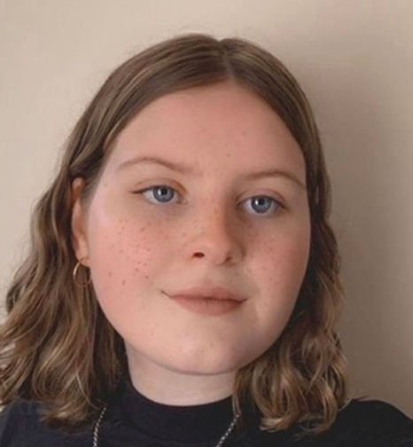

A little about me
Drawing the details that make stories feel like home.
I am Bethany, an illustrator inspired by nature, cute animals and the stories that stay with us.

My practice
Curious by nature.
I have loved books for as long as I can remember. I grew up drawing characters from my favourite stories, then studied illustration at the University of Plymouth.
Today I make warm, observant images for children's books and marketing. I care about the tiny choices that help a child recognise themselves in a story and want to turn the next page.
I believe the simplest idea can become something meaningful when you look closely.